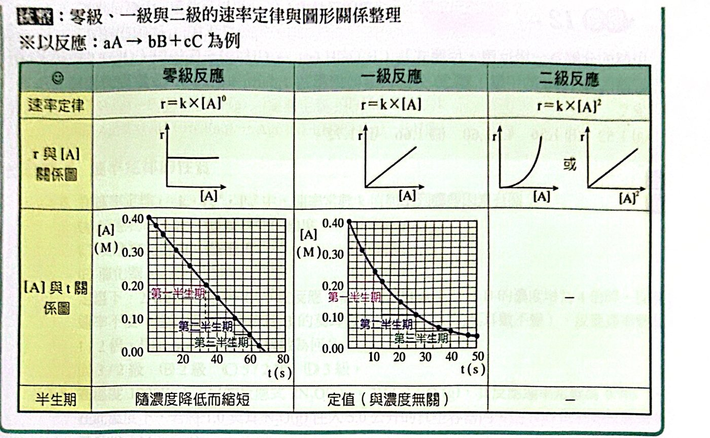

重點整理
一、反應速率（以 R 或 r 表示）
1. 定義
定溫下，單位時間內反應物的消耗量或生成物的生成量。
反應速率 ＝ 反應物的消耗量 ÷ 時間 ＝ − Δ[反應物] / Δt
反應速率 ＝ 生成物的生成量 ÷ 時間 ＝ ＋ Δ[生成物] / Δt
反應物的量隨時間減少，Δ[反應物] 為負值；反應速率恆為正，所以前面加「−」號。
2. 單位
- 量：克、莫耳、M、atm、cmHg……
- 時間：s、min、hr……
- 反應速率：M/s、mmHg/min、mol/s、g/hr……
3. 表示法
aA ＋ bB → dD 中，可用任一物質表示速率，但不同物質求得的速率數值不一定相同，所以要標明是哪一種物質。
- A 的消耗速率 rA ＝ −Δ[A]/Δt；B 的消耗速率 rB ＝ −Δ[B]/Δt；D 的生成速率 rD ＝ ＋Δ[D]/Δt
- 氣相反應可用分壓變化表示：rA ＝ −ΔPA/Δt
4. 反應速率與係數的關係
同一反應中，各物質的消耗或生成速率比 ＝ 係數比。
−Δ[A]/Δt : −Δ[B]/Δt : Δ[D]/Δt ＝ a : b : d
(1/a)(−Δ[A]/Δt) ＝ (1/b)(−Δ[B]/Δt) ＝ (1/d)(Δ[D]/Δt)
5. 反應速率的測定
利用反應進行時某些性質的變化速率來測量：
| 方法 |
使用時機 |
例子 |
| 顏色 |
反應前後顏色改變 |
N2O4（無色）⇌ 2NO2（紅棕）；Fe3+（黃褐）＋ SCN− → FeSCN2+（血紅） |
| 壓力或體積 |
前後氣體係數和不相等 |
2N2O5(g) → 4NO2(g) ＋ O2(g) |
| 沉澱量 |
有沉澱生成 |
AgNO3 ＋ NaCl → AgCl↓ ＋ NaNO3 |
| 導電度 |
離子莫耳數改變 |
H2SO4 ＋ Ba(OH)2 → BaSO4(s) ＋ 2H2O(l) |
| pH 值 |
酸鹼性改變 |
CH3COOH ＋ C2H5OH → CH3COOC2H5 ＋ H2O |
二、速率定律
1. 意義
反應速率與反應物濃度的定量關係式。反應物粒子要有效碰撞才會反應，濃度愈高碰撞機會愈多、速率愈快。
2. 表示法（aA ＋ bB → dD ＋ eE）
(1) 速率定律：r ＝ k [A]x [B]y（氣體也可寫 r ＝ k·PAx·PBy）
(2) 反應級數：x 為 A 的級數、y 為 B 的級數，(x＋y) 為總級數。
- 級數愈大，速率受該物質濃度的影響愈大。
- x、y 由實驗求得，與係數無關；可以是 0、整數或分數。
- H2O2 ＋ 3I− ＋ 2H＋ → I3− ＋ 2H2O：r ＝ k[H2O2][I−]
- CO ＋ Cl2 → COCl2：r ＝ k[CO][Cl2]3/2
(3) 速率常數 k
| 級數 n |
k 的單位（濃度） |
k 的單位（壓力） |
| 0 級 |
M·s−1 |
mmHg·s−1 |
| 1 級 |
s−1 |
s−1 |
| 2 級 |
M−1·s−1 |
mmHg−1·s−1 |
（通式：M1−n·s−1）
3. 速率定律的推求
(1) 由初始速率與濃度的實驗數據：固定其他濃度，一次只改變一種反應物濃度，看速率怎麼變。
- 濃度 ×2，速率 ×1 → 0 級；×2 → 1 級；×4 → 2 級
(2) 由濃度與時間的數據：用某時段的平均速率與該時段的平均濃度代入。
例：2N2O5 → 4NO2 ＋ O2
| 時間（分） |
0 |
10 |
20 |
30 |
| [N2O5]（M） |
1.00 |
0.80 |
0.64 |
0.51 |
0～10 分：0.020 ＝ k(0.90)n；10～20 分：0.016 ＝ k(0.72)n ⇒ 0.020/0.016 ＝ (0.90/0.72)n ⇒ n ＝ 1，r ＝ k[N2O5]
4. 速率定律的應用
改變莫耳數、體積或壓力 → 算出新濃度 → 代入速率定律求新速率。
三、零級、一級與二級反應
|
零級 |
一級 |
二級 |
| 速率定律 |
r ＝ k |
r ＝ k[A] |
r ＝ k[A]2 |
| r 對 [A] 作圖 |
水平線 |
過原點直線 |
拋物線（對 [A]2 為直線） |
| [A] 對 t |
直線遞減（等差） |
指數遞減（等比） |
曲線 |
| 半生期 |
隨濃度降低而縮短 |
定值，與濃度無關 |
隨濃度降低而加長 |
| 例 |
2NH3 →(Pt) N2 ＋ 3H2 |
2H2O2 → 2H2O ＋ O2；放射性衰變 |
|

零級、一級、二級反應的圖形整理
- 零級：例 [NH3] 0.64 → 0.52 → 0.40 → 0.28（每 10 s 減少 0.12）
- 一級：例 [H2O2] 0.200 → 0.100 → 0.050 → 0.025（每 10 s 減半）
放射性衰變（一級反應）與碳-14 定年
- 宇宙中子撞擊大氣中的 14N 產生 14C：147N ＋ 10n → 146C ＋ 11H
- 14C 衰變：146C → 147N ＋ 0−1e，半衰期約 5730 年
- 生物死後不再補充 14C，14C 含量為原來的 1/4 時，死亡約 5730×2 年
N ＝ N0 × (1/2)t/T（T：半衰期；t：經過時間）
例題與類題
看答案與詳解收起
答(1) 3B ＋ C ⇌ 2A (2) (C)
解由圖（2 L 容器）：B 1.4 → 0.8（−0.6 mol）、C 1.4 → 1.2（−0.2 mol）、A 0 → 0.4（＋0.4 mol）
莫耳數變化比 B : C : A ＝ 0.6 : 0.2 : 0.4 ＝ 3 : 1 : 2
10 分鐘後各物質不再變化但反應物仍有剩 → 可逆反應：3B ＋ C ⇌ 2A
(2)
- (A) ✗ A：0.4 mol ÷ 2 L ÷ 10 min ＝ 0.02 M/min
- (B) ✗ 速率恆為正值（0.06 mol/min，不能寫負號）
- (C) ○ C：0.2 ÷ 2 ÷ 10 ＝ 0.01 M/min
- (D) ✗ 反應物濃度下降，速率都是漸減
看答案與詳解收起
答(1) 0.011 M/min (2) 4 mmHg/min
解(1) N2O5 消耗 1.00 − 0.34 ＝ 0.66 M，O2 生成 0.66 × 1/2 ＝ 0.33 M
rO2 ＝ 0.33 ÷ 30 ＝ 0.011 M/min
(2) 設 N2O5 減少 2x：2N2O5(−2x) → 4NO2(＋4x) ＋ O2(＋x)，總壓增加 3x
760 → 820 mmHg：3x ＝ 60 ⇒ x ＝ 20，NO2 生成 4x ＝ 80 mmHg
rNO2 ＝ 80 ÷ 20 ＝ 4 mmHg/min
看答案與詳解收起
答(D)
解N2 ＋ 3H2 → 2NH3：設 N2 減少 x ⇒ H2 −3x、NH3 ＋2x、總壓 −2x
- (A) ✗ −Δ[H2] ＝ 3 × (−Δ[N2])
- (B) ✗ Δ[NH3] ＝ 2 × (−Δ[N2])，應為 Δ[NH3]/Δt × ½
- (C) ✗ ΔPt ＝ −2x，ΔPN2 ＝ −x，兩者不相等
- (D) ○ −ΔPt ＝ 2x ＝ ΔPNH3
看答案與詳解收起
答(A)(C)(E)
解
- (A) ○ 有 AgCl 沉澱生成
- (B) ✗ 反應物、生成物都無色
- (C) ○ 生成 BaSO4 沉澱與水，離子減少，導電度下降
- (D) ✗ 兩邊氣體係數和都是 2，總壓不變
- (E) ○ 4 → 2，定壓下體積會變
看答案與詳解收起
答(E)
解平衡後比較兩邊氣體係數和：
- (A) 2H2 ＋ O2 → 2H2O(l)：3 → 0
- (B) 4PH3 → P4 ＋ 6H2：4 → 7
- (C) 4HBr ＋ O2 → 2Br2 ＋ 2H2O(g)：5 → 4
- (D) N2O4 → 2NO2：1 → 2
- (E) H2 ＋ Br2 → 2HBr：2 → 2，總壓不變 ⇒ 不能用總壓測
看答案與詳解收起
答(D)
解r ＝ k[H2][NO]2
- (A) ○ (B) ○ 1 ＋ 2 ＝ 3
- (C) ○ H2 為一級，分壓 ×2 → 速率 ×2
- (D) ✗ NO 為二級，分壓 ×2 → 速率 ×4
看答案與詳解收起
答(A)
解k 的單位 M·s−1 ⇒ 零級反應，速率與濃度無關，濃度減半速率不變（1 倍）。
看答案與詳解收起
答(1) 4 級 (2) 8.0 M−3·s−1 (3) 約 0.115 M/s (4) 1.2×10−3 mol
解設 r ＝ k[BrO3−]x[Br−]y[H＋]z
- 實驗 1→2：[BrO3−] ×2，r ×2 ⇒ x ＝ 1
- 實驗 2→3：[Br−] ×2，r ×2 ⇒ y ＝ 1
- 實驗 1→4：[H＋] ×2，r ×4 ⇒ z ＝ 2
(1) 總級數 1 ＋ 1 ＋ 2 ＝ 4
(2) k ＝ 8.0×10−4 ÷ (0.10 × 0.10 × 0.102) ＝ 8.0 M−3·s−1
(3) 實驗 5：rBrO3− ＝ 8.0 × 0.40 × 0.30 × 0.202 ＝ 0.0384 M/s
Br2 生成速率 ＝ 3 × 0.0384 ≈ 0.115 M/s
(4) 實驗 1 的 Br2 生成速率 ＝ 3 × 8.0×10−4 ＝ 2.4×10−3 M/s
× 0.5 L ＝ 1.2×10−3 mol/s
看答案與詳解收起
答(1) r ＝ k[A]2[B] (2) 6 M−2·min−1 (3) 0.3 M/min
解(1) 實驗 1→2：[A] ×2，r ×4 ⇒ A 二級；實驗 2→3：[B] ×2，r ×2 ⇒ B 一級
(2) k ＝ 0.0060 ÷ (0.1002 × 0.100) ＝ 6 M−2·min−1
(3) Δ[E]/Δt ＝ 6 × 0.5002 × 0.400 ＝ 0.6 M/min
D 的係數是 E 的一半 ⇒ D 生成速率 ＝ 0.3 M/min
看答案與詳解收起
答(C)
解讀圖：[甲] 0.200 → 0.100 約需 4 秒；0.100 → 0.050 約再需 8 秒（t ≈ 12 s）。
半生期隨濃度減半而加倍 ⇒ 二級反應（零級會縮短，一級會固定）。
看答案與詳解收起
答(1) 0 級 (2) 1.0×10−3 M·min−1
解每 20 分鐘都減少 0.02 M（等差遞減）⇒ 零級
k ＝ 0.02 ÷ 20 ＝ 1.0×10−3 M/min
看答案與詳解收起
答(B)
解r ＝ k[N2][H2]，原本 N2 2 mol、H2 1 mol（共 3 mol，體積 V）
- 實驗 I（定容）：H2 變 4 mol，[N2] 不變、[H2] ×4 ⇒ r2 ＝ 4r1
- 實驗 II（定壓）：總莫耳數 3 → 6，體積變 2V
[N2] ＝ 2/2V（×½）、[H2] ＝ 4/2V（×2）⇒ r3 ＝ ½ × 2 × r1 ＝ r1
看答案與詳解收起
答(C)
解定溫定壓：原本 3 mol → 新的 6 mol，體積變 2 倍。
原本：r ∝ (2/V)(1/V) ＝ 2/V2
新的：r ∝ (5/2V)(1/2V) ＝ 5/4V2
比值 ＝ (5/4) ÷ 2 ＝ 5/8 ⇒ 5a/8
看答案與詳解收起
答(A)
解1 L：[A] ＝ 3、[B] ＝ 2 ⇒ r0 ＝ k × 32 × 2 ＝ 18k
[C] ＝ 1.0 M 時：A 用掉 2、B 用掉 1 ⇒ [A] ＝ 1、[B] ＝ 1 ⇒ r ＝ k
r/r0 ＝ 1/18
看答案與詳解收起
答(C)
解A ＋ 2B → C：設 C 生成 x mmHg ⇒ PA ＝ 100 − x、PB ＝ 200 − 2x
C 與 A 相等：x ＝ 100 − x ⇒ x ＝ 50 ⇒ PA ＝ 50、PB ＝ 100
r/r0 ＝ (50 × 100)/(100 × 200) ＝ 1/4
看答案與詳解收起
答(1) 1.0 M/s 和 2.0 M/s (2) r ＝ k[B] (3) 1.0 s−1 (4) 0.10 M/s
解(1) [B]0 ＝ 1.00 M：[A] 0.10 → 0.05 用 0.05 s ⇒ 1.0 M/s
[B]0 ＝ 2.00 M：[A] 0.04 → 0 用 0.02 s ⇒ 2.0 M/s
(2) [A] 對時間是直線 ⇒ 對 A 為零級；[B] ×2 速率 ×2 ⇒ 對 B 為一級 ⇒ r ＝ k[B]
（[B]0 遠大於 [A]0，反應過程中 [B] 幾乎不變，所以能看出對 A 的級數）
(3) k ＝ 1.0 ÷ 1.00 ＝ 1.0 s−1
(4) r ＝ 1.0 × 0.10 ＝ 0.10 M/s（與 [A] 無關）
看答案與詳解收起
答(A)
看答案與詳解收起
答(B)
解零級：每 10 分鐘 A 減少 0.04 M。40 分鐘 A 共減少 0.16 M（A 還剩 0.04，尚未用完）。
B 生成 ＝ 0.16 × 4/2 ＝ 0.32 M
看答案與詳解收起
答(B)
解現在 aX 80%、bX 20%。往回推 t 年：
aX ＝ 80 × 2t/100、bX ＝ 20 × 2t/50
相等：80 × 2t/100 ＝ 20 × 2t/50 ⇒ 4 ＝ 2t/100 ⇒ t ＝ 200 年
看答案與詳解收起
答(B)
解一級反應半生期固定為 100 秒：再過 100 秒剩 1/4 ⇒ 已反應 75%。
看答案與詳解收起
答(E)
解CH3OCH3 → 3 分子氣體，設分解 x atm，總壓 ＝ 1 ＋ 2x
20 分：1 ＋ 2x ＝ 1.4 ⇒ x ＝ 0.2，剩 0.8
一級反應：每 20 分剩下的比例固定（×0.8）⇒ 40 分剩 0.64，分解 0.36
總壓 ＝ 1 ＋ 2 × 0.36 ＝ 1.72 atm
單元練習
看答案與詳解收起
答(C)
解O2：11.2 mL ÷ 22400 ＝ 5.0×10−4 mol；2H2O2 → 2H2O ＋ O2 ⇒ H2O2 1.0×10−3 mol
÷ 3 min ＝ 3.3×10−4 mol/min
看答案與詳解收起
答(D)
解換成「反應速率」（除以係數）：
① 0.15/1 ＝ 0.15 ② 0.6/3 ＝ 0.20 ③ 0.4/2 ＝ 0.20 ④ 0.45/2 ＝ 0.225（最快）
看答案與詳解收起
答(C)
解−Δ[N2] : −Δ[H2] : Δ[NH3] ＝ 1 : 3 : 2
k1×1 ＝ k2×3 ＝ k3×2 ⇒ k1 : k2 : k3 ＝ 1 : 1/3 : 1/2 ＝ 6 : 2 : 3
看答案與詳解收起
答(C)
解2A(g) ＋ 3B(g) → 2C(s) ＋ D(g)：A −2x、B −3x、D ＋x（C 是固體不計）
總壓：90 − 4x ＝ 70 ⇒ x ＝ 5 ⇒ B 減少 15 mmHg ÷ 5 min ＝ 3 mmHg/min
看答案與詳解收起
答(A)(B)(C)
解
- (A) ○ 生成沉澱與水，離子減少，導電度下降
- (B) ○ NO2 為紅棕色
- (C) ○ 有 AgCl 沉澱
- (D) ✗ 2 → 2，總壓不變
- (E) ✗ H＋ 仍留在溶液中（HCl → HNO3），pH 不變
看答案與詳解收起
答(A)(D)(E)
解k 只受反應物本性、溫度、催化劑（活化能）影響；與濃度、壓力無關。
看答案與詳解收起
答(A)
解設 r ＝ k[A]m[B]n
① [A] ×½、[B] ×4，r 不變：(½)m × 4n ＝ 1 ⇒ m ＝ 2n
② 體積 ×2、B 莫耳 ×2：[A] ×½、[B] 不變，r ×½ ⇒ m ＝ 1，n ＝ ½
總級數 ＝ 3/2
看答案與詳解收起
答(B)
解k 的單位 s−1 ⇒ 一級：r ＝ k[N2O]
[N2O] ＝ 1.0 ÷ 5.0 ＝ 0.20 M ⇒ r ＝ 0.76 × 0.20 ＝ 1.52×10−1 M/s
看答案與詳解收起
答(C)
解速率 ∝ 1/所需時間：
- [X] ×2（[Y] 不變）：時間 0.60 → 0.15（×¼）⇒ 速率 ×4 ⇒ X 二級
- [Y] ×½（[X] 不變）：時間 0.15 → 0.30 ⇒ 速率 ×½ ⇒ Y 一級
⇒ 與 [X]2 成正比且與 [Y] 成正比
看答案與詳解收起
答(D)
解
- 實驗 1→2：[I−] ×2，r ×2 ⇒ I− 一級
- 實驗 2→4：[OCl−] ×2，r ×2 ⇒ OCl− 一級
- 實驗 1→3：[OCl−] ×2 且 [OH−] ×2，r 不變 ⇒ OH− 為 −1 級
r ＝ k[I−][OCl−]/[OH−]
k ＝ 1.8×10−4 × 1.00 ÷ (2×10−3 × 1.5×10−3) ＝ 60 s−1
看答案與詳解收起
答(B)
解pH ＝ 13 ⇒ [OH−] ＝ 0.1 M（原本 1.00 M）
OH− 為 −1 級：[OH−] 變為 1/10 ⇒ 速率 ×10 ⇒ 1.8×10−3
看答案與詳解收起
答(C)(E)
解[A] 每 5 分鐘減少 0.2 M（等差）⇒ 零級
- (A)(B)(D) ✗ 零級反應速率與濃度無關、半生期會縮短
- (C) ○ k ＝ 0.2 ÷ 5 ＝ 0.04 M/min
- (E) ○ 再過 5 分鐘（第 20 分）0.2 − 0.2 ＝ 0
看答案與詳解收起
答(C)
解數圖中的球（實心 A、空心 B）：
- 甲：A 6、B 6，r ＝ 4.5
- 乙：A 4、B 6，r ＝ 2.0
- 丙：A 4、B 3，r ＝ 1.0
乙 → 丙：A 不變、B ×½，r ×½ ⇒ n ＝ 1
乙 → 甲：B 不變、A ×1.5，r ×2.25 ＝ 1.52 ⇒ m ＝ 2
m ＋ n ＝ 3
看答案與詳解收起
答(B)
解r ＝ k[A]2[B]，由乙：2.0 ＝ k × 42 × 6 ⇒ k ＝ 1/48
丁：A 8 個、B 6 個 ⇒ r ＝ (1/48) × 64 × 6 ＝ 8.0 M/s
看答案與詳解收起
答(1) 2 (2) 約 0.067 M（1/15 M）
解(1) 1/[X] 對時間（反應進行時）為直線 ⇒ 二級反應（1/[X] ＝ 1/[X]0 ＋ kt）
(2) 由圖：t ＝ 1 s 時 25、t ＝ 2 s 時 35，斜率 10 M−1s−1
往回推 t ＝ 0：1/[X]0 ＝ 15 ⇒ [X]0 ＝ 1/15 ≈ 0.067 M
看答案與詳解收起
答(D)
解B 莫耳 ×2、體積 ×3/2 ⇒ [A] ×2/3、[B] ×(2 ÷ 3/2) ＝ ×4/3
r ×(2/3) × (4/3)2 ＝ 32/27
看答案與詳解收起
答(B)
解A ＋ 2B → C：C ＝ A 時 x ＝ 100 − x ⇒ x ＝ 50 ⇒ PA ＝ 50、PB ＝ 300 − 100 ＝ 200
代入各式看比值是否為 1/3：
- (A) 50·2002 / (100·3002) ＝ 2/9
- (B) 50·200 / (100·300) ＝ 1/3 ✓
- (C) 4/9 (D) 1/6 (E) 1/4
看答案與詳解收起
答(C)
解第一次：[A] ＝ [B] ＝ 0.1/0.5 ＝ 0.2 M ⇒ r ∝ 0.22 × 0.2
第二次：[A] ＝ 0.2/1 ＝ 0.2、[B] ＝ 0.1/1 ＝ 0.1 ⇒ r ∝ 0.22 × 0.1
比值 ＝ 1/2
看答案與詳解收起
答(1) r ＝ k[A]2[C] (2) 3S/2
解(1) 讀圖：
- [A] 1.0 → 2.0，速率 0.4 → 1.6（×4）⇒ A 二級
- [B] 改變速率不變 ⇒ B 零級
- [C] 對速率為過原點直線 ⇒ C 一級
(2) S ＝ k × 1.02 × 4.0 ⇒ k ＝ S/4
新條件：D 生成速率 ＝ (S/4) × 2.02 × 3.0 ＝ 3S
B 消耗速率 ＝ D 的 1/2（係數 1 : 2）＝ 3S/2
看答案與詳解收起
答(D)
解一級反應：r 與 [A] 成正比、[A] 隨時間指數遞減、半生期與濃度無關（水平線） ⇒ (D)
(A)(B)(C) 都是零級反應的圖形。
看答案與詳解收起
答(D)
解
- 圖 1：一級反應的濃度隨時間指數遞減 ⇒ 丙（甲是不反應、乙是零級的直線）
- 圖 2：一級反應 r ＝ k[A]，速率與濃度成直線關係 ⇒ 己（戊是零級的水平線、庚是曲線）
看答案與詳解收起
答(D)
解零級：20 秒減少 0.05 M ⇒ 速率 0.0025 M/s
0.20 → 0.05 共減少 0.15 M ⇒ 0.15 ÷ 0.0025 ＝ 60 秒
看答案與詳解收起
答(C)
解經過一個半衰期，N2O 分解 4 atm：2N2O → 2N2 ＋ O2
剩 N2O 4、生成 N2 4、O2 2 ⇒ 總壓 10 atm
看答案與詳解收起
答(B)
解10 小時 ＝ 5 個半衰期，剩下 (1/2)5 ＝ 1/32
出發時至少 1.0 × 32 ＝ 32 mg
看答案與詳解收起
答(A)(B)(E)
解半生期 10 分鐘：
- (A) ○ 35 − 25 ＝ 10 分鐘，剛好一個半生期
- (B) ○ 20 分鐘 ＝ 兩個半生期，剩 1/4
- (C) ✗ 一級反應半生期與濃度無關
- (D) ✗ 速率 ∝ 濃度，剩 1/4
- (E) ○ k 與濃度無關
看答案與詳解收起
答(C)
解設總放射性 100：甲 60（半衰期 1 年）、乙 40（半衰期 2 年）
- 兩年後：甲 15、乙 20
- 四年後：甲 3.75、乙 10
- (A) ✗ 乙剩下自己的 50%（占原總量 20%）
- (B) ✗ 甲占 15/35 ≈ 43%
- (C) ○ 3.75 ＜ 10
- (D) ✗ 甲 27%、乙 73%
看答案與詳解收起
答(B)
解二級反應：−Δ[C4H6]/Δt ＝ k[C4H6]2
⇒ Δ[C4H6]/Δt（為負值）對 [C4H6]2 作圖是斜率 −k 的直線 ⇒ (B)
看答案與詳解收起
答(E)
解產率 70%：0.20 × 0.70 ＝ 0.14 mg
10 天後：0.14 × (1/2)10/20.5 ≈ 0.14 × 0.71 ≈ 0.10 mg
看答案與詳解收起
答(B)(D)(E)
解C2H5OH(g) → C2H4(g) ＋ H2O(g)：每分解 x，總壓增加 x
圖中總壓每 20 秒固定增加 30 mmHg（等速）⇒ 零級，乙醇初壓 480 mmHg，消耗速率 1.5 mmHg/s
- (A) ✗ 零級
- (B) ○ 分解 240 mmHg 需 240 ÷ 1.5 ＝ 160 秒
- (C) ✗ k ＝ 1.5 mmHg/s
- (D) ○ 零級速率固定，C2H4 生成速率 1.5 mmHg/s
- (E) ○ 50 秒：480 − 75 ＝ 405 mmHg